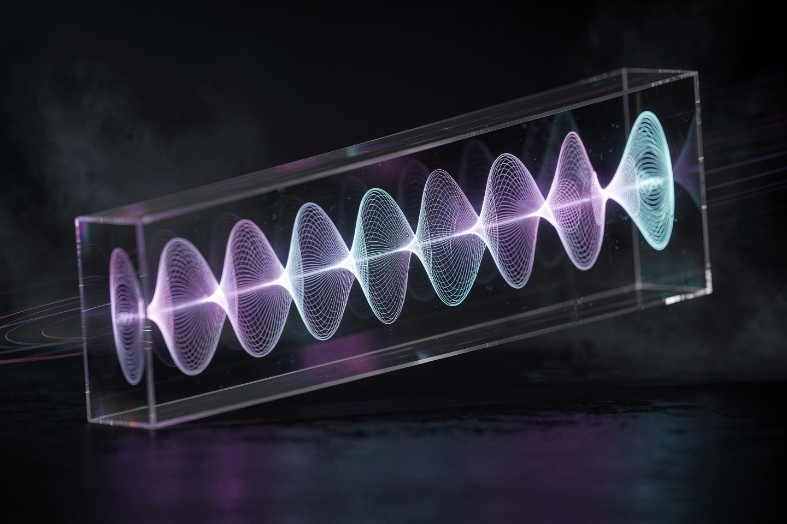
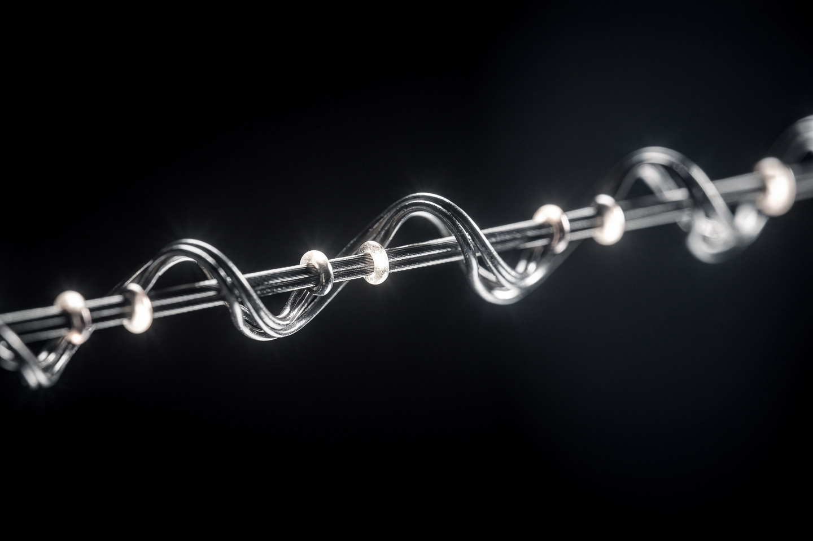

Рабочая заметка · квантовая механика · часть VI
Уравнение Шрёдингера: частица как стоячая волна
Электрон в атоме — не шарик на орбите, а нечто гораздо ближе к звучащей струне: у него есть собственные «ноты», и только эти ноты он может «сыграть».
В 1926 году Эрвин Шрёдингер, развивая идею Луи де Бройля о волновой природе материи (см. формулу Эйлера, часть V), вывел уравнение, определяющее эволюцию волновой функции ψ — математического объекта, квадрат модуля которого даёт вероятность найти частицу в данной точке. Уравнение линейно и детерминистично, но управляет вероятностями, а не точными траекториями. В этой заметке — само уравнение, его простейшее точное решение (частица в ящике) и то, откуда берётся квантование энергии.


Волновая функция в двух словах
В квантовой механике частица не имеет одновременно точной координаты и точной скорости (принцип неопределённости Гейзенберга) — вместо этого её полностью описывает волновая функция ψ(x,t), комплексное число в каждой точке пространства и момент времени.
| Объект | Что значит |
|---|---|
| ψ(x,t) | волновая функция — полное описание состояния частицы (комплексное число) |
| |ψ(x,t)|² | плотность вероятности найти частицу вблизи точки x в момент t (правило Борна) |
| ∫|ψ|²dx = 1 | частица где-то обязательно есть — полная вероятность равна 100% |
Это не означает «частица размазана в пространстве, как облако пыли» — правильнее сказать: до измерения нет факта о том, где именно частица находится, есть только распределение вероятностей, куда попадёт результат измерения.
Само уравнение
Формулировка (временное уравнение). Волновая функция эволюционирует во времени по правилу:
Мнимая единица i здесь не украшение — вспомните формулу Эйлера (часть V): именно она гарантирует, что решение — вращающаяся на комплексной плоскости фаза, а значит |ψ|² остаётся постоянным во времени, если систему не трогать (унитарность, полная вероятность не «протекает» никуда).
Для состояний с точно определённой энергией E (стационарные состояния) уравнение упрощается до задачи на собственные значения:
Именно эта, более простая, стационарная форма используется в §3 — она превращает поиск решения в чисто геометрическую задачу: «какая форма волны умещается в данных условиях».
Частица в ящике
Простейшая точно решаемая система — частица, запертая в одномерном «ящике» шириной L с бесконечно высокими стенками (ψ = 0 на границах, как у струны, закреплённой с двух концов). Решения стационарного уравнения (1) для такого ящика — это в точности стоячие волны:
Нажмите на n выше — форма волны меняется, а вместе с ней и число узлов (точек внутри ящика, где ψ = 0, частицу там найти нельзя вообще). Ровно как у струны гитары: n = 1 — основной тон без узлов, n = 2 — первый обертон с одним узлом посередине, и так далее.
Квантование энергии
Подставив ψn в уравнение (1), получаем энергию каждого уровня:
Это и есть квантование: в отличие от классической частицы (мячик в коробке может иметь любую энергию — толкните слабее или сильнее), квантовая частица в ящике может иметь только энергии из списка E1, 4E1, 9E1, 16E1, ... — ни один промежуточный уровень не разрешён.
Наименьшая разрешённая энергия — E1, не ноль. Это прямое следствие принципа неопределённости Гейзенберга: если бы частица имела E = 0, она была бы абсолютно неподвижна (нулевой импульс) И заперта в ящике конечного размера (точно известная координата) — оба факта точно одновременно, что запрещено. «Дрожание» на нулевом уровне (zero-point energy) — не техническая деталь, а фундаментальный запрет.
Туннельный эффект
В реальности стенки ящика никогда не бывают бесконечно высокими. Если стенка конечной высоты (энергетический барьер), решение уравнения Шрёдингера показывает: волновая функция не обрывается резко на границе барьера, а лишь быстро затухает внутри него, оставаясь ненулевой — а значит, существует небольшая, но не нулевая вероятность обнаружить частицу с ДРУГОЙ стороны барьера, даже если классически у неё не хватает энергии его перепрыгнуть.
Именно на туннельном эффекте работает сканирующий туннельный микроскоп (1981, Бинниг и Рорер, Нобелевская премия): тончайшая игла подводится почти вплотную к поверхности (не касаясь!), электроны туннелируют через зазор, и по силе туннельного тока восстанавливается рельеф поверхности с разрешением до отдельных атомов. Тот же эффект объясняет альфа-распад ядер и работу флэш-памяти.
Сквозной пример: уровни энергии
Пусть в некотором ящике энергия основного уровня E1 = 2 эВ (условное значение для чистоты счёта). По формуле §4 (En = n²E1) найдём несколько следующих уровней:
| n | En/E1 | En, эВ |
|---|---|---|
| 1 | 1 | 2 |
| 2 | 4 | 8 |
| 3 | 9 | 18 |
| 4 | 16 | 32 |
Расстояние между соседними уровнями РАСТЁТ с n (8−2=6, затем 18−8=10, затем 32−18=14) — не постоянный шаг, как могло бы показаться из слова «квантование». Частица, переходящая с уровня 2 на уровень 1, излучает квант света точно с энергией 8−2=6 эВ — ни больше, ни меньше; это и есть механизм, порождающий линейчатые спектры атомов (см. также уравнение Планка-Эйнштейна).
Куда это ведёт: суперпозиция и кот
Уравнение Шрёдингера линейно — значит, если ψ1 и ψ2 оба являются решениями, их сумма (суперпозиция) c1ψ1 + c2ψ2 тоже решение. Частица может находиться одновременно «немного в состоянии 1 и немного в состоянии 2» — не в переносном смысле, а буквально, пока над ней не совершено измерение.
Сам Шрёдингер придумал мысленный эксперимент с котом в 1935 году как критику, а не как одобрение копенгагенской интерпретации: кот заперт в ящике с механизмом, который с 50% вероятностью выпускает яд, если распадается радиоактивный атом (квантовое событие). Формальное применение уравнения ко ВСЕЙ системе «атом+механизм+кот» до открытия ящика даёт суперпозицию «кот жив» и «кот мёртв» одновременно — абсурдный вывод для макроскопического объекта, которым Шрёдингер и указывал на нерешённую проблему измерения (§7, key_problems): где именно и почему суперпозиция превращается в один определённый исход, уравнение само по себе не говорит.
На сайте это отдельные законы, если хочется пройти глубже:
Уравнение Шрёдингера · Принцип неопределённости Гейзенберга · Принцип суперпозиции · Формула де Бройля
Эксперимент дома
Натяните бельевую верёвку или пружину-слинки между двумя неподвижными точками (или попросите кого-то держать один конец) и потрясите её рукой с разной частотой, подбирая скорость, пока не «поймаете» чёткую стоячую волну — сначала с одной «пучностью», затем (потрясите быстрее) с двумя.
Что заметить волна «встаёт» на чёткое место только на определённых частотах встряхивания — на промежуточных частотах получается хаотичное дрожание без чёткой формы. Это НАГЛЯДНАЯ механическая модель §3-§4: закреплённые концы верёвки играют роль стенок ящика, а разрешённые чёткие формы волны — это в точности разрешённые квантовые уровни n=1,2,3, только для верёвки — с частотой звука, а для электрона — с энергией.
В тёмной комнате направьте лазерную указку на тонкий волос (свой или из щётки), закреплённый вертикально, так чтобы луч проходил рядом с ним, на белую стену на расстоянии 2-3 метра.
Что заметить на стене появится не просто тень, а серия чередующихся светлых и тёмных полос (дифракционная картина) — прямое доказательство того, что свет ведёт себя как волна, огибающая препятствие, а не как поток частиц-шариков, летящих по прямой. Та же волновая природа, что описывает уравнение Шрёдингера для электронов, здесь видна невооружённым глазом для света.
Задачи для проверки
Сначала подумайте сами, затем откройте решение. Решение везде идёт по схеме: Дано → Закон → Решение → Ответ.
1. Энергия основного уровня частицы в ящике E₁ = 3 эВ. Чему равна энергия уровня n = 3?
Дано E1 = 3 эВ, n = 3.
Закон квантование энергии в ящике (§4): En = n²E1.
Решение E3 = 3²·3 = 9·3 = 27 эВ.
Ответ 27 эВ.
2. Ширину ящика увеличили вдвое, ничего больше не меняя. Как изменилась энергия основного уровня E₁?
Дано Lнов = 2L (ширина удвоена).
Закон формула §4: E1 ∝ 1/L².
Решение E1,нов/E1 = L²/(2L)² = 1/4.
Ответ уменьшилась в 4 раза — чем просторнее ящик, тем ниже энергия запертой частицы (интуитивно: меньше «стеснена», меньше кинетическая энергия локализации).
3. Сколько узлов (внутренних точек с ψ = 0) у волновой функции уровня n = 5?
Дано n = 5.
Закон число внутренних узлов ψn равно n − 1 (§3: n=1 — 0 узлов, n=2 — 1 узел, и так далее).
Решение узлов = 5 − 1 = 4.
Ответ 4 узла — ещё 2 «узла» на самих стенках, но их обычно не считают, так как это границы, а не внутренние точки.
4. Электрон переходит с уровня n = 2 (E = 8 эВ) на уровень n = 1 (E = 2 эВ), излучая один фотон. Какова энергия этого фотона?
Дано E2 = 8 эВ, E1 = 2 эВ.
Закон сохранение энергии (часть II) + квантование (§6): энергия фотона равна разности уровней.
Решение Eфотона = E2 − E1 = 8 − 2 = 6 эВ.
Ответ 6 эВ — ни больше, ни меньше; именно так рождаются чёткие линии в атомных спектрах.
5. Почему частица в ящике не может иметь энергию точно 0 (полностью покоиться)? Какой принцип это запрещает?
Закон принцип неопределённости Гейзенберга (§4-сноска).
Решение E = 0 означало бы одновременно точно нулевой импульс И точно известную координату (частица заперта в ящике конечного размера) — оба факта точно одновременно запрещены принципом неопределённости Δx·Δp ≥ ℎ/2.
Ответ принцип неопределённости Гейзенберга — отсюда минимальная, «нулевая» энергия E1, никогда не ноль.
Опечатка, неверная формула, число не сходится, коряво объяснено — напишите нам: feedback@bridge42worlds.org. Каждое сообщение реально читается, разбирается и по нему вносится правка — это не «в стол».